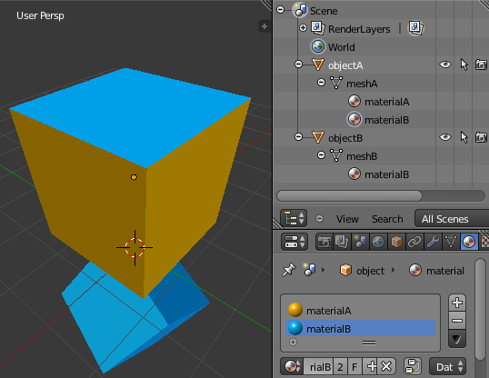

This is a part of my Audiosurf 2 scripting documentation.
Blender (www.blender.org) is a free open-source 3D graphics design program. It can be used for many things but in our case we want to use it to create a model for use in Audiosurf 2 skins and mods. As far as I know, it is the most feature-complete free 3D modeler available. Another relatively powerful free modeler is Wings 3D. Common commercial alternatives are 3ds Max, Lightwave, Maya, and ZBrush.
This article will explain how to get models from Blender into Audiosurf 2. Actually learning to make something in Blender is outside the scope of this article. If you don't know how to use Blender, there are many resources out there to help you learn it. The resource you should choose depends on how much you already know about 3D graphics and your preferences. The official Blender tutorials page is here. There are many other good resources on other sites and there are several books as well. A 3D modeling class, if available to you, might not teach you Blender specifically but many of the things you learn there can be applied to Blender. Blender is an intimidating program but it is possible to produce simple models with only basic knowledge about how to use it. Just be careful not to make a model with a million polygons.
An important thing to understand about Blender and most 3D modeling programs is they aren't specifically designed to make models for video games. Many of them, including Blender, focus on "rendering" capabilities for producing photorealistic images or videos from your models. Many 3D modeler features cannot survive the conversion process needed to load the model into a game. Features like shaders, materials, animations, and lighting typically cannot be converted or can only be partially converted with some extra work. In some cases Blender lacks simple functionality that would make producing game models much easier. Blender also has "game creation" tools, but they are used for Blender's own game engine and generally should be ignored. Keep this in mind when you look at Blender documentation and tutorials. Also, be aware of the version of Blender you are using. For example, Blender 2.6 had a big facelift and made the old "Doc:2.4" pages useless.
To create an OBJ file of your model, go to File -> Export -> Wavefront (.obj). On the left there are some settings that change how the model is exported. The official documentation for OBJ export is here. You should read the "Export Options" section before reading the rest of this.
If you leave it off then AS2 will completely fail to load the model and this message will appear on-screen:
failed:example.obj. check output_log.txt for details
In the log file you will see the same message and this will be above it:
Argument is out of range. Parameter name: index
Leaving this off can generate the following messages in output_log.txt:
At least one object uses quads...automatic triangle conversion is being used, which may not produce best results Polygons which are not quads or triangles have been skipped
In the OBJ exporter, these are options that control how groups are created:
Here is an example scene with multiple materials set up:

Exporting with "Objects as OBJ Groups" creates these groups in this order:
Exporting with "Material Groups":
OBJ files can't contain vertex colors but the script can add some by loading it with BuildMesh then calling BuildMesh a second time with the colortable setting included. colortable, unfortunately, is simply a flat list of colors that matches up with the order vertices are specified in the OBJ file. Writing them all into the script by hand would be tedious, but might be feasible in some scenarios:
cube_mesh = BuildMesh{mesh="cube.obj"}
BuildMesh{
mesh = cube_mesh,
colortable = {
{1,1,1},
{1,1,0},
{1,0,0},
{0,0,0},
{0,0,1},
{0,1,1},
},
}
CreateObject{
name="colorful cube",
railoffset=0,
floatonwaterwaves = false,
gameobject={
mesh=cube_mesh,
shader="VertexColorUnlitTinted",
}
}Another possibility is exporting to OBJ and also to an alternative format like Stanford .PLY or Collada .DAE which supports vertex colors, then gathering all the colors from the file's source code using regular expressions.